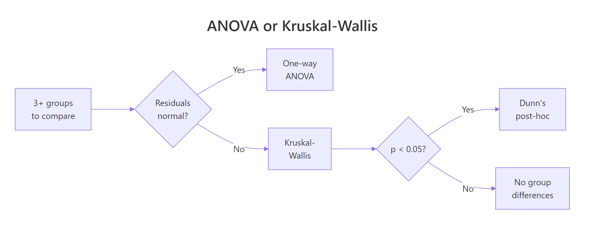
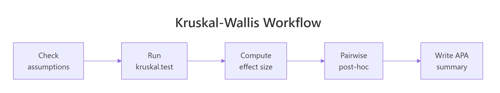

Kruskal-Wallis Test in R: One-Way Nonparametric ANOVA with Post-Hoc
The Kruskal-Wallis test is the nonparametric version of one-way ANOVA. It ranks every observation across groups, then asks whether those ranks spread evenly across three or more independent groups, so you can compare groups without assuming normally distributed data. Use it whenever ANOVA's normality or equal-variance assumptions fail, or whenever your response is ordinal.
When should you use the Kruskal-Wallis test instead of ANOVA?
You reach for Kruskal-Wallis when a one-way ANOVA is tempting but its assumptions fail. ANOVA needs roughly normal residuals and similar variances; skew, heavy tails, or tiny groups break its p-value. Kruskal-Wallis sidesteps the problem by converting raw values to ranks and testing whether those ranks spread evenly. The API mirrors aov(), so you can swap it in with one line. Below, kruskal.test() runs on the built-in PlantGrowth dataset, which contains 30 plant dry-weight measurements split across a control and two fertiliser treatments.
The test returns H = 7.99, df = 2 (always groups - 1), and p = 0.018. Because the p-value is below 0.05, you reject the null that all three groups share the same distribution. At least one treatment shifts the plant weights. No normality assumption was required, and no Levene's test was needed first, which is the whole point of this test.
Try it: Run the Kruskal-Wallis test on the chickwts dataset to check whether chick weights differ across feed types.
Click to reveal solution
Explanation: Six feeds, 71 chicks, clearly different growth outcomes. The tiny p-value means at least one feed produces different weights from the others, and a post-hoc test would tell you which pairs drive the difference.
How does the Kruskal-Wallis test work with ranks?
The test pools every observation across groups, sorts them, and replaces each value with its rank from 1 to N. A group whose original values were mostly large ends up with mostly large ranks; a group with small values ends up with small ranks. If all groups come from the same distribution, each group should have a mean rank near the overall average of (N + 1) / 2. The Kruskal-Wallis statistic H is a weighted sum of squared deviations from that overall average, so a big H means at least one group has a mean rank far from the middle.
Here is the formula the test computes:
$$H = \dfrac{12}{N(N+1)} \sum_{i=1}^{k} \dfrac{R_i^{\,2}}{n_i} \;-\; 3(N+1)$$
Where:
- $N$ = total number of observations across all groups
- $k$ = number of groups
- $n_i$ = number of observations in group $i$
- $R_i$ = sum of the ranks assigned to group $i$
Let's compute the ranks and group means by hand, then verify our manual H matches kruskal.test.
The overall mean rank is (30 + 1) / 2 = 15.5. The control sits right on that number, trt1 is well below, and trt2 is well above, which already hints that the treatments push the weights in opposite directions. The size of the gap is what H quantifies.
Both values agree to the last decimal, confirming that kruskal.test() is just a wrapper around the rank-sum arithmetic. The chi-squared label in the output is a distributional approximation: under the null, H is close to a $\chi^2$ with k - 1 degrees of freedom when group sizes are reasonable (each n_i >= 5).
Try it: Compute the mean rank of count per spray in the InsectSprays dataset. Which spray has the highest mean rank?
Click to reveal solution
Explanation: Sprays A, B, and F cluster near the top of the overall ranking (high kill counts); C, D, and E cluster near the bottom. That gap is exactly what Kruskal-Wallis is designed to detect.
What are the assumptions of the Kruskal-Wallis test?
Kruskal-Wallis trades the normality assumption of ANOVA for a shorter list of weaker assumptions. You still need three things to hold.
- Independent observations within and between groups. No repeated measures on the same subject, no clustered sampling.
- Ordinal or continuous response variable. Pure categorical outcomes (like "pass/fail") are not valid.
- Similar distribution shape across groups if you want to interpret the test as a comparison of medians. Without this, the test is a comparison of stochastic dominance, which is still useful but answers a different question.

Figure 1: Decision flow: pick ANOVA or Kruskal-Wallis based on residual shape, then proceed to Dunn's post-hoc if the omnibus test is significant.
A quick boxplot is usually enough to eyeball the third assumption. Groups should have similar spread and similar skew, even if their centres differ.
The three boxes have comparable widths and similar whisker lengths, which supports the same-shape assumption. Each group has 10 observations, so the chi-squared approximation for the p-value is safe. If any group dipped below 5 observations, you would set kruskal.test() aside in favour of an exact test via the coin package.
Try it: Report the sample sizes per spray in InsectSprays and check that every group is at least 5.
Click to reveal solution
Explanation: Every spray has 12 observations, comfortably above the n >= 5 rule of thumb for the chi-squared approximation. No need for an exact test.
How do you measure the Kruskal-Wallis effect size?
A p-value only tells you whether an effect is detectable; it says nothing about whether the effect is big enough to care about. For Kruskal-Wallis, the usual effect size is eta-squared based on H, written $\eta_H^2$. It measures the proportion of variance in ranks explained by group membership, scaled to fall between 0 and 1.
$$\eta_H^2 \;=\; \dfrac{H - k + 1}{n - k}$$
Where:
- $H$ = the Kruskal-Wallis statistic you just computed
- $k$ = number of groups
- $n$ = total observations
Interpret the result with Cohen's thresholds: $\eta_H^2 \approx 0.01$ is a small effect, $0.06$ is medium, $0.14$ and above is large.
An $\eta_H^2$ of 0.25 lands well above Cohen's "large" threshold of 0.14. About a quarter of the variation in the rank of plant weight is attributable to which treatment a plant received. That is a strong effect, worth reporting alongside the p-value in any write-up.
rstatix::kruskal_effsize() function computes the same number in one call. We compute it by hand here so the code runs anywhere, including inside this browser session. In a local R session, rstatix::kruskal_effsize(pg, weight ~ group) gives the same 0.25 along with a size label and confidence interval.Try it: Suppose kruskal.test() returned $H = 12.4$ on $k = 4$ groups with $n = 60$ total. Compute $\eta_H^2$.
Click to reveal solution
Explanation: 0.168 is above Cohen's large-effect cutoff of 0.14, so group membership accounts for a meaningful share of the rank variance.
How do you run Dunn's post-hoc test in R?
A significant Kruskal-Wallis result tells you some group differs, not which pairs. For that you need a post-hoc test that compares every pair of groups and controls the familywise error rate. The classic choice after Kruskal-Wallis is Dunn's test, available in local R sessions as FSA::dunnTest(). Its base-R analogue is pairwise.wilcox.test(), which runs a Wilcoxon rank-sum comparison for each pair and corrects the p-values. We use pairwise.wilcox.test() here because the FSA package is not available in this browser runtime, and the practical conclusions are equivalent.
Read the matrix as "row vs column": trt1 vs trt2 is the only pair with an adjusted p-value below 0.05. The two fertiliser treatments differ from each other, but neither differs from the control on its own. That matches what the mean-rank table suggested earlier: trt1 pulled weights down, trt2 pushed them up, and the control sat between them.
"bonferroni" is the most conservative and is fine for a handful of groups. "holm" dominates Bonferroni (same error control, more power) and is a safe default. "BH" (Benjamini-Hochberg) controls the false discovery rate and is preferred when you expect many true differences, as in omics or screening studies.Try it: Run pairwise rank-sum tests on InsectSprays$count by spray with the Holm adjustment. Which spray pairs differ at the 0.05 level?
Click to reveal solution
Explanation: Sprays A, B, and F form one high-performance cluster; C, D, and E form a low-performance cluster. Within each cluster, pairs are indistinguishable; between clusters, every pair is highly significant.
How do you report Kruskal-Wallis results?
A clean APA-style line needs five ingredients: the test name, degrees of freedom, the H statistic, the p-value, and the effect size. Readers should be able to reconstruct your analysis from the sentence alone, without hunting through an appendix. Here is a compact template that fits in a single line.
Paste that line into a results section and follow it with the pairwise conclusion, for example: "Follow-up pairwise Wilcoxon tests with Bonferroni correction showed that trt1 and trt2 differed significantly (adjusted p = 0.025); neither treatment differed from the control." That is a complete, reproducible, publication-ready summary.
Try it: Given H = 14.2, df = 3, p = 0.0026, and eta-squared-H = 0.18, build the APA report string with sprintf.
Click to reveal solution
Explanation: %d formats the integer df, %.2f and %.3f fix the decimal places for the statistic and p-value so your results tables look uniform.
Practice Exercises
Exercise 1: Sepal length across iris species
Run a Kruskal-Wallis test on iris$Sepal.Length across iris$Species. Compute the eta-squared-H effect size and decide whether a post-hoc test is warranted. Save the test result to my_iris_kw and the effect size to my_iris_eta.
Click to reveal solution
Explanation: The test is highly significant and the effect size (0.65) is enormous, so a pairwise post-hoc is absolutely warranted to say which species pairs drive the difference.
Exercise 2: Full pipeline on chickwts
Build the complete Kruskal-Wallis pipeline for chickwts$weight ~ feed: run the omnibus test, compute eta-squared-H, run pairwise.wilcox.test with Bonferroni, and list which feed pairs differ at the 0.05 level. Save intermediates to my_chicks_kw, my_chicks_eta, and my_chicks_pw.
Click to reveal solution
Explanation: Casein and sunflower are the top performers; horsebean is the worst. Most pairs involving horsebean or sunflower are significant; linseed-soybean and meatmeal-soybean are not. Eta-squared-H of 0.52 is a very large effect.
Exercise 3: Compute H from scratch
Given a numeric vector my_vals and a factor my_grp, compute the Kruskal-Wallis H statistic without calling kruskal.test, then verify it matches what kruskal.test returns. Use the formula $H = \dfrac{12}{N(N+1)} \sum R_i^2 / n_i - 3(N+1)$.
Click to reveal solution
Explanation: The two values match to four decimals, confirming the formula. kruskal.test() applies a small tie-correction when ranks are tied, so for continuous data with no ties the manual and built-in answers are identical.
Complete Example
Here is the full pipeline applied end-to-end to the airquality dataset, which records daily ozone in parts per billion across five months. Ozone is notoriously right-skewed, making it an almost textbook use case for Kruskal-Wallis.
The omnibus test rejects equality of monthly ozone distributions with a p-value around 7e-06. The effect size of 0.22 is large by Cohen's thresholds, so the month-to-month difference is practically meaningful. The pairwise matrix shows the shape of the pattern: July and August are indistinguishable from each other but significantly higher than May, June, and September. In plain English, the two summer months carry elevated ozone, which matches the well-known photochemistry of hot, sunny weather driving ground-level ozone formation.
Summary
The Kruskal-Wallis test is the go-to tool when you want to compare three or more independent groups but cannot trust ANOVA's assumptions. Ranks replace raw values, so skew and heavy tails stop mattering, and the test stays valid on small samples.

Figure 2: The five-step Kruskal-Wallis analysis workflow from assumption checks through reporting.
| Step | Function | What it tells you |
|---|---|---|
| Check assumptions | boxplot(), table() |
Are groups independent and similar in shape? Is every group n ≥ 5? |
| Run the omnibus test | kruskal.test(y ~ g) |
Does any group differ from the others? |
| Compute effect size | $(H - k + 1) / (n - k)$ | How strong is the difference? Small, medium, or large? |
| Pairwise post-hoc | pairwise.wilcox.test() |
Which specific pairs drive the omnibus result? |
| Report results | sprintf() |
One APA-style line with df, H, p, effect size. |
References
- Kruskal, W. H. & Wallis, W. A. (1952). Use of ranks in one-criterion variance analysis. Journal of the American Statistical Association 47(260), 583-621. Link
- Dunn, O. J. (1964). Multiple comparisons using rank sums. Technometrics 6(3), 241-252. Link
- R Core Team.
?kruskal.testdocumentation. Link - R Core Team.
?pairwise.wilcox.testdocumentation. Link - Tomczak, M. & Tomczak, E. (2014). The need to report effect size estimates revisited. Trends in Sport Sciences 1(21), 19-25.
- Mangiafico, S. (2016). R Companion Handbook: Kruskal-Wallis Test. Link
rstatix::kruskal_effsize()reference. Link- Hollander, M., Wolfe, D. A., & Chicken, E. (2014). Nonparametric Statistical Methods, 3rd ed. Wiley. Chapter 6.
Continue Learning
- One-Way ANOVA in R, the parametric sibling of this test, covering F-statistics, Levene's test, and Tukey's HSD.
- Welch's ANOVA in R, for use when variances are unequal but the data is still approximately normal.
- Wilcoxon Rank-Sum Test in R, the two-sample rank test, which Kruskal-Wallis generalises to three or more groups.